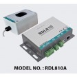
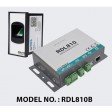
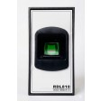
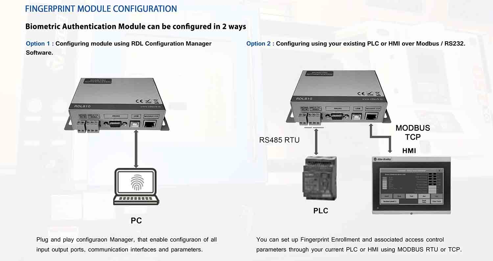
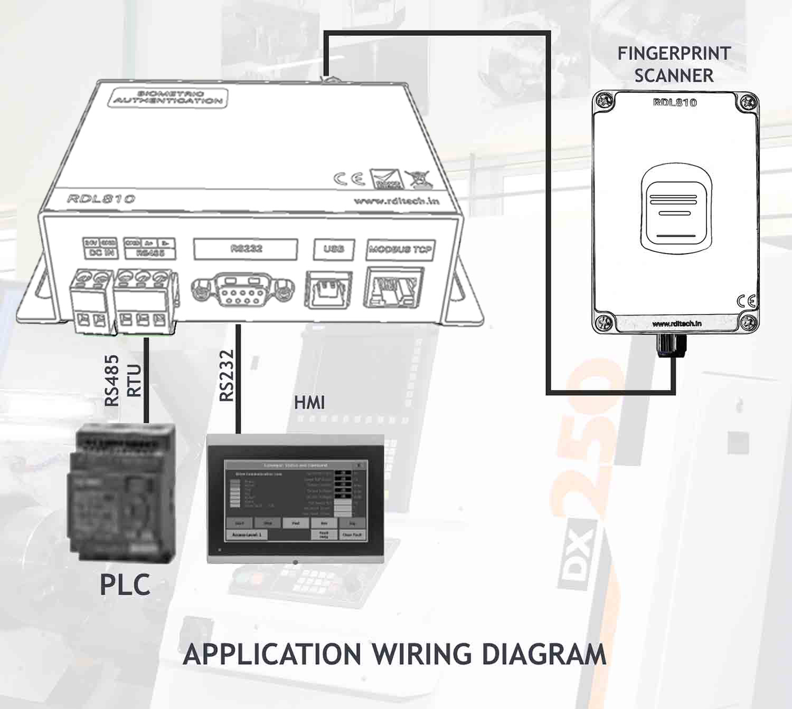
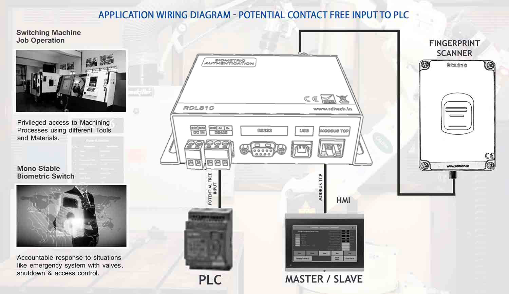
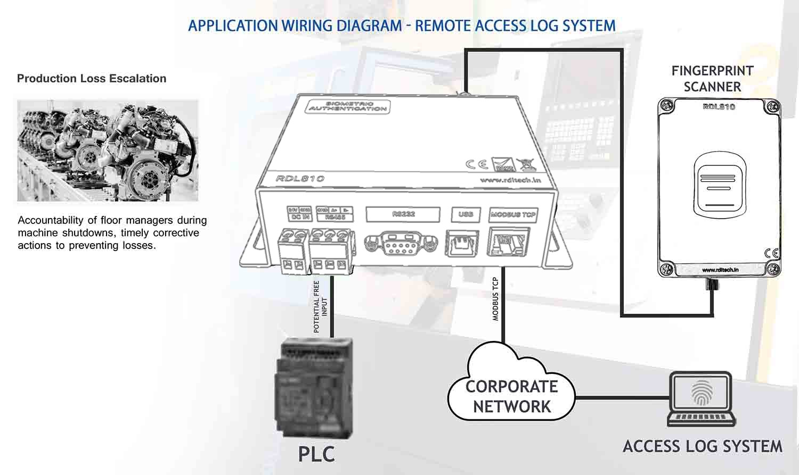
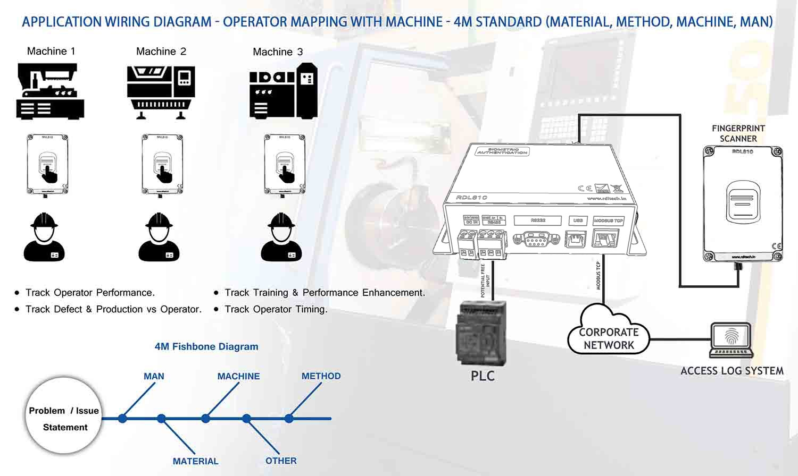
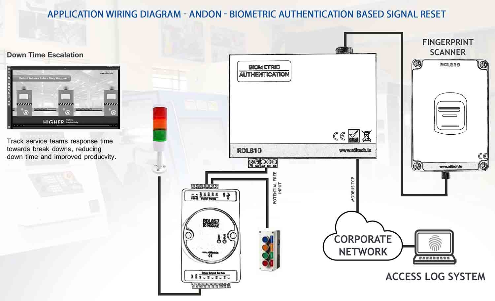
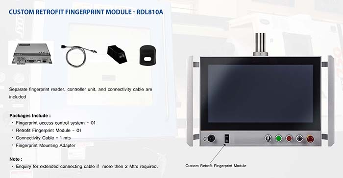

Biometric Authentication System for PLC and SCADA
This system enhances security for PLC (Programmable Logic Controller) and SCADA (Supervisory Control and Data Acquisition) systems through biometric authentication. The product is tested with all PLCs and supports multiple interface options.
Kit Comparison
| RDL810A | RDL810B | |
|---|---|---|
| RS485 RTU | ✓ | ✓ |
| MODBUS TCP | ✓ | ✓ |
| RELAY | ✓ | ✓ |
| FINGERPRINT READER WITH IP65 ENCLOSURE | ✓ | NA |
| ENCLOSURE TYPE - PANEL MOUNT | NA | ✓ |
Features
- Fingerprint scanning is the sole method used for biometric authentication
- Integration with existing PLC and SCADA systems for seamless implementation
- Secure storage and encryption of biometric data
- User management and access control functionalities
- Real-time monitoring and logging of access events
- Centralized administration and reporting capabilities
- Fingerprint enrollment: Max 250 Users
- Memory: 16GB
- Communication: RS485 MODBUS RTU, MODBUS TCP, RS232, USB
- Power supply: DC 24V
Fingerprint Module Configuration

The Biometric Authentication Module can be configured in two ways: using the RDL Configuration Manager software via PC, or directly through your existing PLC/HMI over Modbus RTU / Modbus TCP / RS232.
Benefits
- Higher level of security and access control for critical industrial control systems
- Prevention of unauthorized access and potential threats
- Reduction in data breach and sabotage risk
- Compliance with industry regulations and standards
- Elimination of password-related security vulnerabilities
- Centralized administration for user management and reporting
Applications
The system suits industries utilizing PLC and SCADA:
- Manufacturing facilities with automated production lines
- Energy and utility organizations with power generation & distribution systems
- Water treatment plants
- Transportation and logistics companies with control and monitoring systems
- Oil and gas refineries and petrochemical plants
- 4M (Man, Machine, Material, Method) standard implementation
Application Wiring Diagrams

Standard application wiring diagram showing connections to PLC (RS485 RTU), HMI (Modbus TCP) and the fingerprint scanner.

Potential contact-free input to PLC - privileged access to machining processes and mono-stable biometric switch for emergency systems.

Remote access log system - tracks accountability of floor managers during machine shutdowns to prevent production loss.

Operator mapping with machine using the 4M standard (Material, Method, Machine, Man) - track operator performance, training and defects.

Andon system - biometric authentication based signal reset for tracking service team response time and reducing downtime.
Custom Retrofit Fingerprint Module - RDL810A

Separate fingerprint reader, controller unit, and connectivity cable are included.
Packages Include:
- Fingerprint access control system - 01
- Retrofit Fingerprint Module - 01
- Connectivity Cable - 1 mts
- Fingerprint Mounting Adapter
Note: Enquiry for extended connecting cable if more than 2 Mtrs required.
Fingerprint Sensor Specifications
| Parameter | Value |
|---|---|
| Fingerprint image input time | < 0.3 seconds |
| Window area | 14 x 18 mm |
| Matching method | Comparison method (1:1) |
| Search method | 1:N |
| Characteristic file | 256 bytes |
| Template file | 512 bytes |
| Security Level | Five (low to high: 1, 2, 3, 4, 5) |
| False Acceptance Rate (FAR) | < 0.001% |
| False Rejection Rate (FRR) | < 1.0% |
| Search time | < 1.0 seconds (1:1000 hours, mean value) |
| Host interface | UART / USB1.1 |
| Working environment | Temperature -20°C to +40°C; Relative humidity 40%-85% (no condensation) |
| Storage environment | Temperature -40°C to +85°C; Relative humidity < 85% (no condensation) |
DRY Contact
- 1 x SPDT Relay
Power Supply
- 12 to 36 volts DC Supply
Enclosure Specifications
| Component | Rating |
|---|---|
| Fingerprint Controller Enclosure | IP 20 |
| Fingerprint Sensor Enclosure | IP 65 |
| Mounting | Wall / DIN Rail |
Dimensions
| Component | Size |
|---|---|
| Fingerprint Controller Enclosure | 151.7 mm x 84.3 mm |
| Fingerprint Sensor Enclosure | 80 mm x 120 mm x 55 mm |
| Mounting | Wall / DIN Rail |